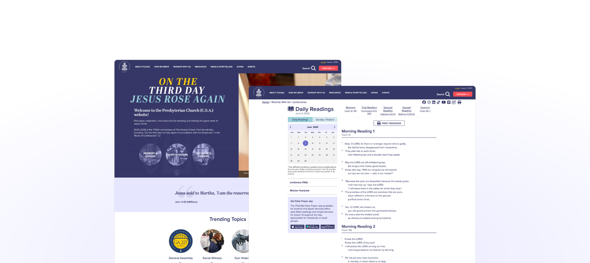
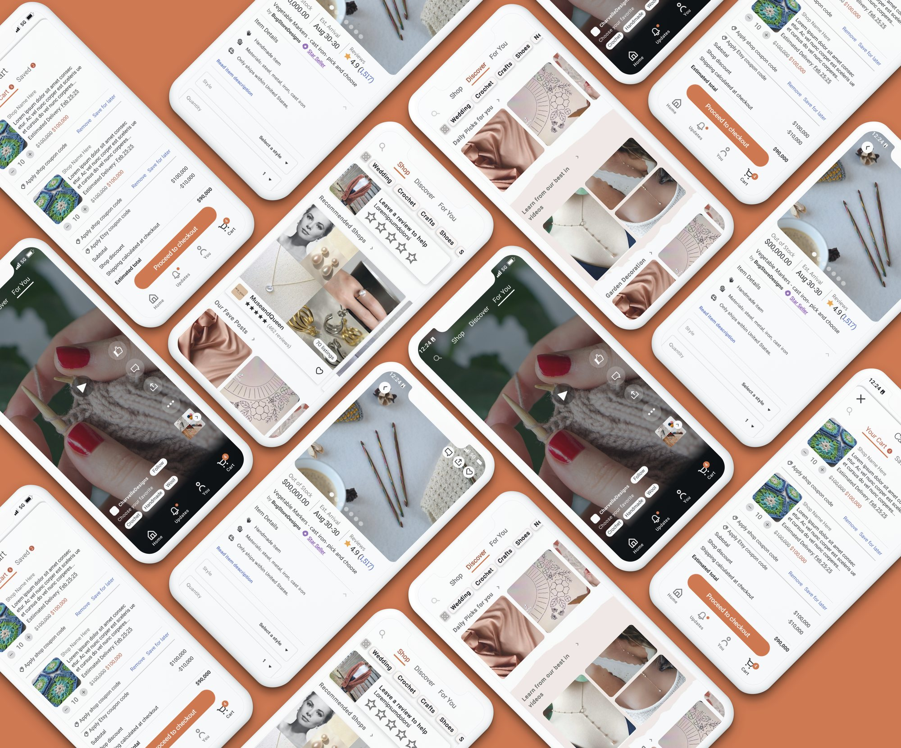

01
Church consolidation
Unifying a fragmented digital landscape into one accessible platform — and a purposeful design system — for one of the nation's largest Protestant churches.
View project →
02
Etsy iOS redesign
Rebuilding Etsy's mobile information architecture so shoppers find what matters faster — and feel confident enough to buy.
View project →
03
Activate Games
A discovery & strategy engagement evaluating whether a native mobile app was the right investment — and where the real growth opportunities were.
View project →